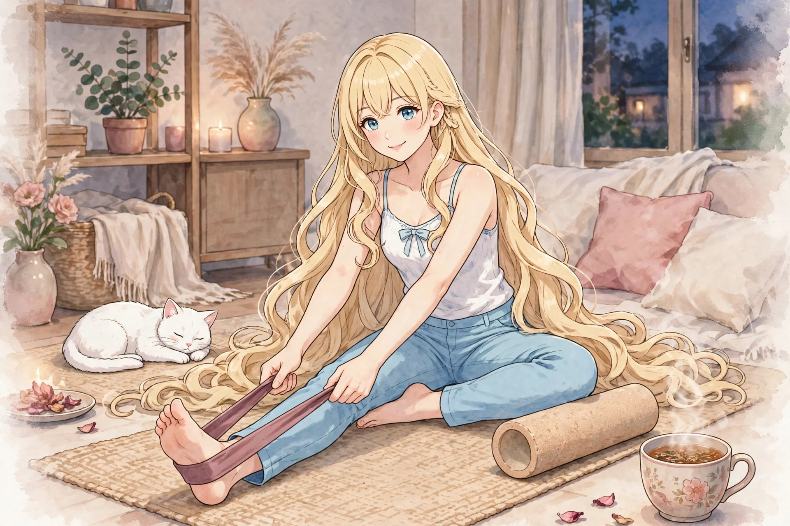

トップ ＞ ボディケア ＞ むくみ感のある日のセルフケアの組み立て
むくみ感のある日のセルフケアの組み立て

夕方になると、脚が重だるく、むくんでいるような感覚になる日があります。施術の現場でも、夕方の予約では特に多い相談です。この記事では、そういう日のセルフケアの組み立て方を整理します。これは日常の過ごし方の工夫の紹介であり、医療行為ではありません。むくみが続く、片脚だけが目立つ、痛みや色の変化があるといった場合は、医療機関にご相談ください。
まずは、休める体勢を作る
重だるい日は、ケアの前にまず休むことです。脚をクッションなどに乗せて少し高くして横になる、靴下や衣類の締め付けをゆるめる、といった小さなことから始めます。立ちっぱなし・座りっぱなしだった日は、体勢を変えるだけでも感覚が変わります。
日中の工夫としては、座り仕事の合間に足首を回す、立ち仕事の合間にその場でかかとの上げ下げをする、といった小さな動きも、現場でよくお伝えしています。
入浴とケアの、順番を組み立てる
夜の流れは、「入浴→脚を休める→クリームを塗る」という順番が組み立てやすいです。入浴で温まった後に、足先から太ももへ向けて、なでるようにクリームを伸ばします。力を入れて押す必要はありません。手のひら全体で包むように触れるだけでも、ケアの時間になります。
塗る順番は、足の甲→足首→ふくらはぎ→ひざ裏→太もも、と下から上に進めると、流れが作りやすくなります。量の目安は、別記事「部位で変える、ボディクリームの塗る量の目安」の考え方が参考になります。
部位ごとのセルフケアは、姉妹サイトにまとめています
脚の重だるさをはじめ、部位・症状ごとのセルフケアの工夫は、姉妹サイト「症状別セルフケア資料｜ストレッチ図解【全100症状】」にまとめています。この記事のケアと合わせてどうぞ。
仕事帰りの流れで組み立てるなら、「帰宅→着替え→夕食→入浴→ケア」という順番の中で、ケアの置き場所を入浴後に固定するのがおすすめです。重だるい日ほど、ケアの手順を増やすのではなく、順番を単純にすることが大切です。脚を休める時間、入浴、クリームを塗る時間。この3つだけに絞った「重だるい日メニュー」を決めておくと、疲れている日でも迷わず進められます。翌朝の感覚をメモしておくと、自分の組み立ての合う・合わないが見えてきます。
重だるさの感じ方は、その日の仕事内容や靴、移動の多さでも変わります。自分の「重だるくなりやすい日のパターン」を知っておくと、ケアの組み立ても先回りして用意できます。
組み立てに迷う日は、まず脚だけ、と範囲を決めることから始めてみてください。

セラフィナ「重だるい日は、無理のない組み立てで。部位別の詳しい資料も用意してあるよ」